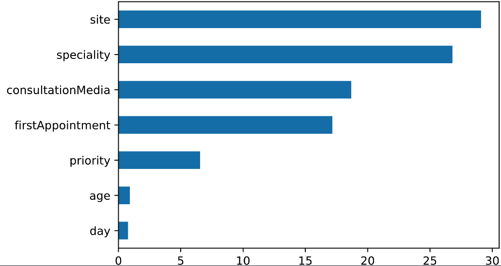
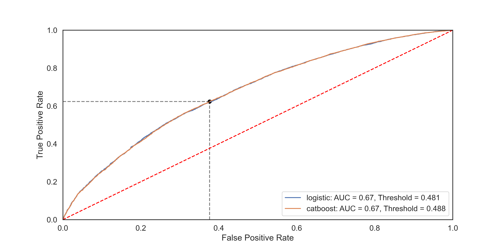
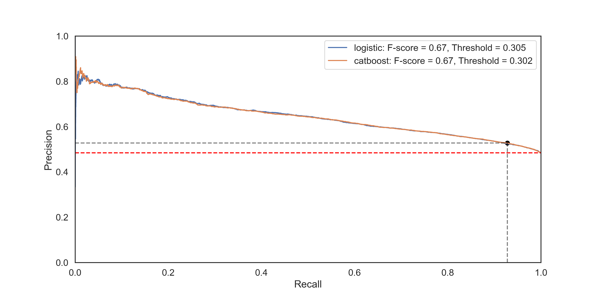
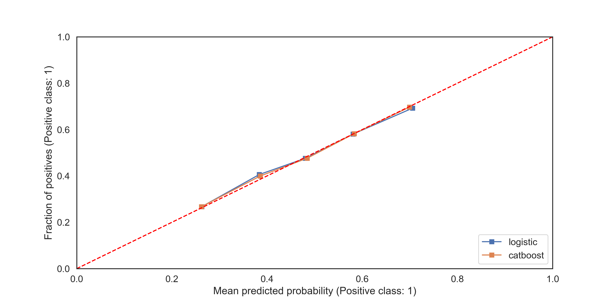

Output Evaluation
Feature Importance
featureImportances = test.getFeatureImportance(models['catboost']['model'])
fig = featureImportances.plot.barh()
fig.figure.savefig('featureImportances.png')

Figure 1: Feature Importances.
ROC Curve
fig, ax = test.plotROC(models, data)
fig.figure.savefig('ROCcurve.png')

Figure 2: Receiver Operating Characteristic curve for both CatBoost and Logistic Model.
Precision-Recall Curve
fig, ax = test.plotPrecisionRecall(models, data)
fig.figure.savefig('PRcurve.png', dpi=300)

Figure 3: Precision-Recall curve for both CatBoost and Logistic Model.
Calibration Curve
fig, ax = test.plotCalibrationCurve(models, data, strategy='quantile')
fig.figure.savefig('CalibrationCurve.png')

Figure 4: Calibration curve for both CatBoost and Logistic Model.
Evaluation Report
The evaluate() function computes a comprehensive set of performance metrics using the test data.
report = test.evaluate(models['catboost']['model'], data)
print(report)
{
'Attend': {
'precision': 0.7976354138025845,
'recall': 0.7815193965517241,
'f1-score': 0.7894951694108042,
'support': 3712
},
'DNA': {
'precision': 0.7901138716356108,
'recall': 0.8057534969648984,
'f1-score': 0.7978570495230629,
'support': 3789
},
'accuracy': 0.7937608318890814,
'macro avg': {
'precision': 0.7938746427190977,
'recall': 0.7936364467583112,
'f1-score': 0.7936761094669336,
'support': 7501
},
'weighted avg': {
'precision': 0.7938360372833652,
'recall': 0.7937608318890814,
'f1-score': 0.7937190280623637,
'support': 7501
}
}